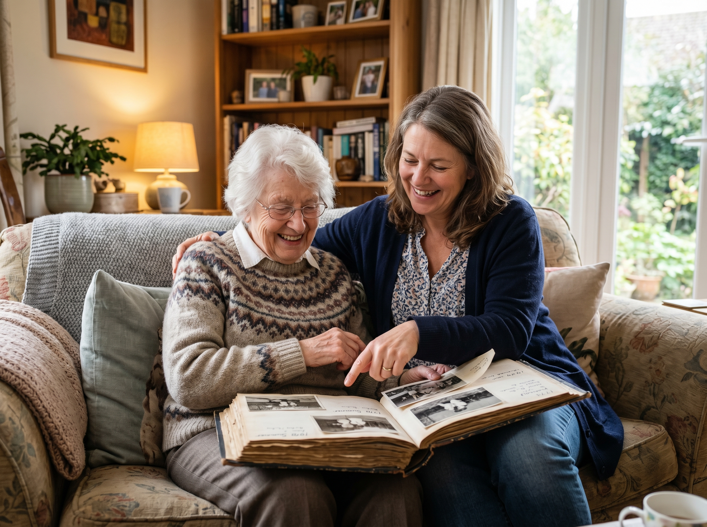

Margaret, 78, has lived in her Burlington home for over 30 years. After her husband passed, she managed fine on her own — until a fall last winter made her daughters realize she needed more support. The family agreed:
Mom should stay home. But how?
This is the conversation happening in kitchens across Ontario. Seniors want to stay home. Families want them safe. The gap between those two things usually comes down to one word: affordability.
The good news? There's a solution that more Ontario families are turning to — and it starts with the home itself.
After decades of ownership, many Ontario seniors sit on significant home equity — often their largest asset. At the same time, fixed retirement income can make it hard to cover the rising costs of care, home modifications, or daily support.
A reverse mortgage lets homeowners aged 55+ convert a portion of that equity into tax-free funds — without selling the home and without monthly mortgage payments. The loan is repaid when the home is eventually sold.
It's not the right choice for everyone. But for seniors who want to stay put and need financial breathing room, it can be a powerful tool.
One of the most practical uses of reverse mortgage funds is paying for professional in-home care — the kind of support that keeps seniors safe, comfortable, and independent.
First Class Home Care Inc., serving Halton, Peel, Mississauga, Brampton, Burlington, Oakville, Milton, Markham, Guelph, and surrounding areas, provides:
With the right care plan, many seniors stay in their own home for years longer than they would have otherwise — avoiding or delaying the move to a long-term care facility.
Adult children often carry the weight of caregiving alongside jobs and their own families. It's exhausting — and it doesn't have to be that way.
Accessing home equity to bring in professional caregivers means:
This isn't two separate services. It's one plan with two parts:
Ragini helps homeowners explore whether a reverse mortgage is the right financial fit — with clear, honest guidance and no pressure.
Designs a personalized care plan built around the senior's actual needs, schedule, and comfort.
Together, the financial flexibility and professional care create a pathway for seniors to age where they're happiest — at home.
A reverse mortgage isn't for everyone, and that's okay. But if you or a loved one is:
It's worth having the conversation.
Compassionate care, where you need it most.
firstclasshomecareinc.com 905-636-9995A conversation costs nothing. Find out if a reverse mortgage could help fund the care your family needs.
Book a Free ConsultationBlue Key Mortgage is licensed with BRX Mortgage Inc. (FSRA #13549). Reverse mortgages are available to homeowners aged 55+. This article is for informational purposes only and does not constitute financial or medical advice. Please consult with a qualified professional regarding your specific situation.